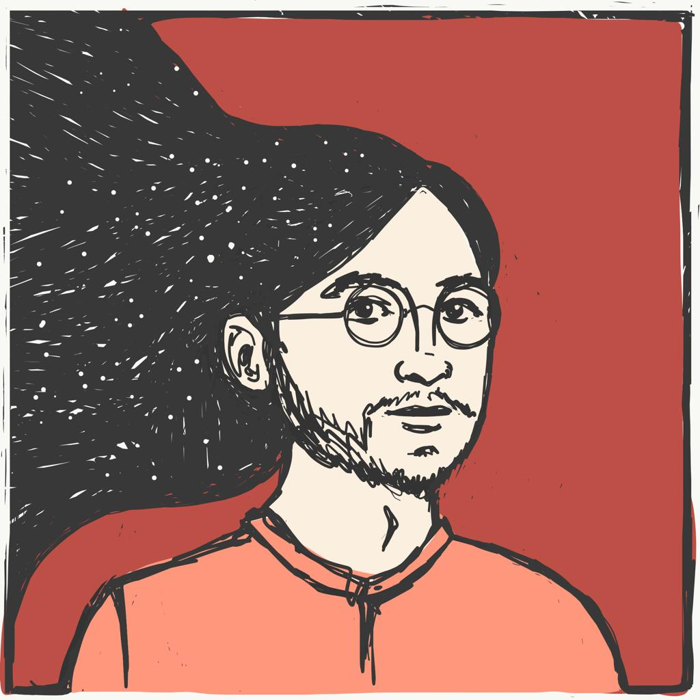
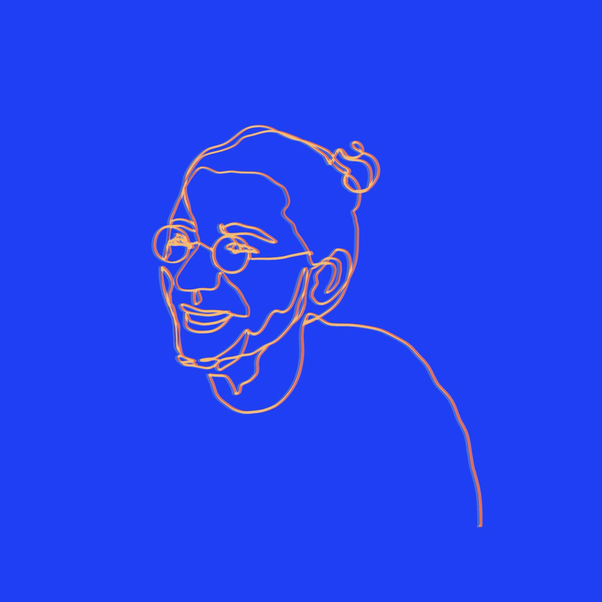
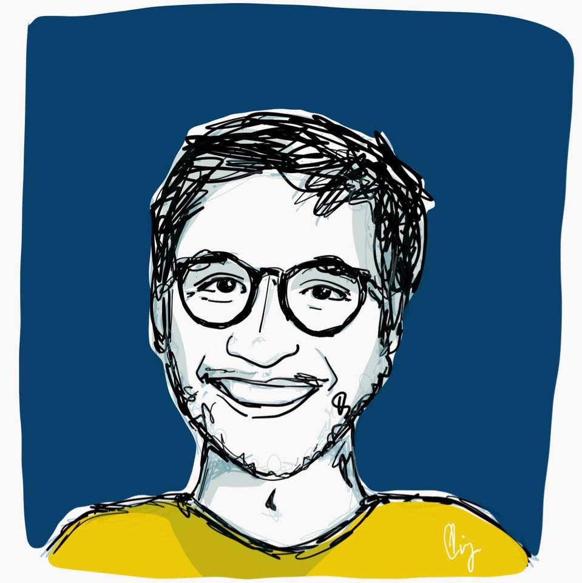
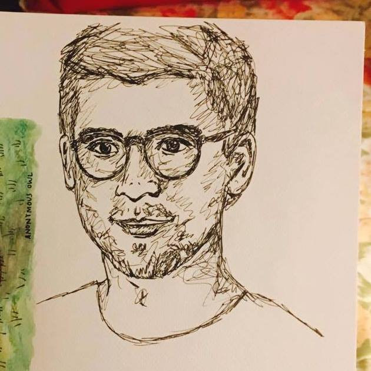
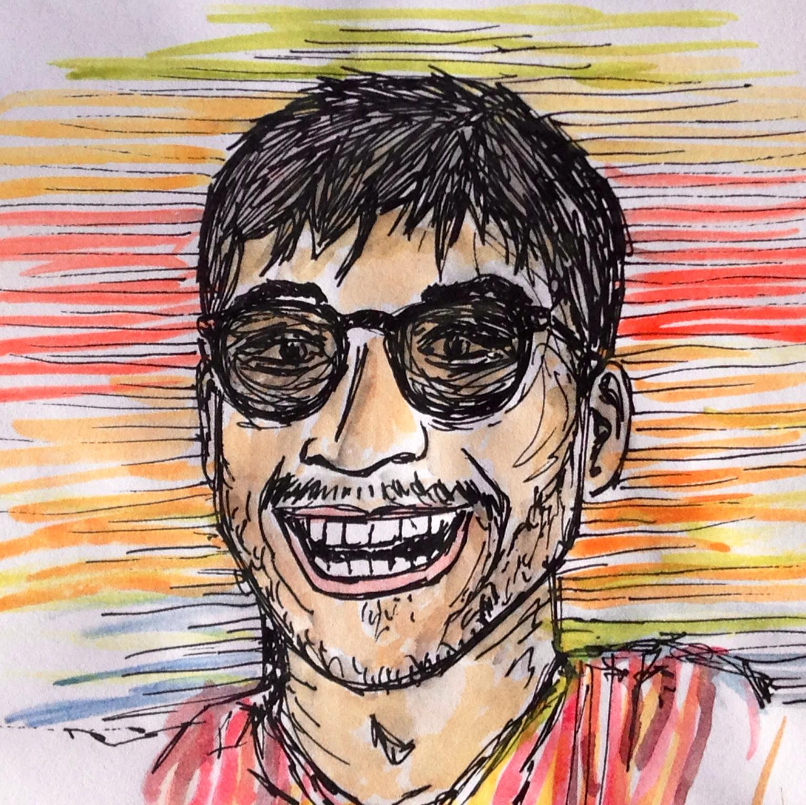

About me
Nicola Greco Photo by Virginia Alonso is a Ph.D. student in the Decentralized Information Group at MIT. He writes and advances research on ways to re-decentralize the web, focusing on technical, political, and social aspects of decentralized systems both at MIT and the Berkman-Klein Center for Internet and Society.
He started writing code when he was very young. He was 14 when he started the petition “Linux in Italian Schools”, converting schools to use Open Source Software; 16, when he started the BuddyPress’ developers community - an open source platform for federated social networks; 17, when he made one of the first unofficial Twitter buttons (two years before they came out); 18, he wrote software for Social Network analysis used by Telecom Italia that awarded him two research grants. The latter was key for his exposure; all of a sudden he was traveling around Europe, gave a TEDx and appeared Italian Wired Top 10 under 25. At 21 left his undergraduate college one year before graduation to join MIT determined to work on re-decentralizing the Web after his experience in Mozilla.
At 23 he participated in the design of Filecoin. He is interested in designing and building decentralized infrastructure.
Publications
    
- Boneh, D., Eskandarian, S., Hanzlik L., Greco, N. Single Secret Leader Election (eprint). 2020.
- Campanelli, M., Fiore, D., Greco, N. Kolonelos, D., Nizzardo, L. Vector Commitment Techniques and Applications to Verifiable Decentralized Storage (eprint). 2020.
- Benet, J., Greco, N. Filecoin: A Decentralized Storage Network (whitepaper). 2017.
- Smith, E., Greco, N., Bosnjak, M., Vlachos, A. A Strong Lexical Matching Method for the Machine Comprehension Test. Conference on Empirical Methods in Natural Language Processing 2015.
Events and Conferences
The following are events and conference I gave a presentation at. Want me to give a keynote/unconference? Please contact me at @nicolagreco or via email at me at nicola dot io.
- What is a Hackathon?, SeedCamp, London, 2014/07
- 10 points Manifesto of a new generation, OrientaGiovani, Confindustria, Rome, 2012/11
- The International Italian, how to expand the borders, WorkingCapital, Rome, 2012/11
- School as a Framework: appeal to the President, iSchool, Rome, 2012/10
- The mathematics of Social Networking Potential, TEDx, Milan, 2012/07
- Presenter: Interviewing Italian successes, Nuovi Mille, Turin, 2011/07
- How to be young in the 2.0, ToscanaLab, Arezzo, 2010/12
- Panel: Communication Week, Milan, 2010/09
- Horizontal, vertical and transversal social concepts, Ignite Italia, Rome, 2010/01
- Under21: Digital Natives, Capitale Digitale, Rome, 2009/11
- The future of New Media, Venice Sessions, Venice, 2009/08
- Turn a blog into a social network, WordCamp, Milan, 2009/05
- Introduction to BuddyPressDEV, WordCamp, Milan, 2009/05
- From blogs to social networks, MateraCamp, Matera, 2009/05
- News, blogs and RSS aggregators, LinuxDay, La Sapienza University, Rome, 2008/10
- Presenting BongoLinux, aggregating Linux Blogs, LinuxDay, La Sapienza University, Rome, 2007/05